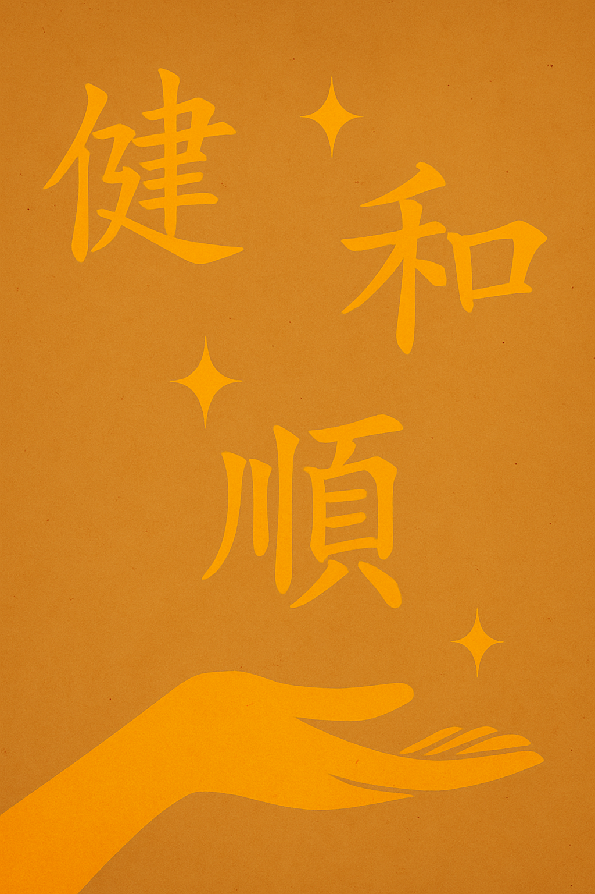

Qi (Chi) & Chinese Massage
A simple introduction to how traditional methods help you feel balanced and renewed.
On our About page, you read how a client’s day-to-day life changed after trying Chinese massage. This page offers a brief overview of Qi (pronounced “chee”)—a traditional concept of the body’s vital energy—and how Chinese massage works with it to support your overall well-being.
What Is Qi (Chi)?
In traditional Chinese understanding, Qi is the body’s natural life force—an energetic flow that supports how you feel physically and emotionally. When Qi moves smoothly, people often describe feeling clear-headed, steady, and energized. When it’s blocked or out of balance, you might notice tension, fatigue, or a “weighed-down” feeling.
How Chinese Massage Engages Qi
Chinese massage uses specific techniques—pressing, kneading, rolling, and stretching—along pathways known traditionally as meridians. By working these routes and key points, the therapist aims to:
- Encourage smooth flow of Qi and circulation
- Release deep knots and muscular holding patterns
- Restore a natural sense of balance and ease
Many clients say the work “goes deeper,” not just relaxing the surface but addressing the underlying tension that keeps returning. This is one reason Chinese massage can feel different from standard Western massage.
Want a broader overview of techniques and benefits? Visit About Chinese Massage →
What You Might Feel
- Warmth or gentle soreness as deep knots release (usually fades within a day)
- Lighter mood, clearer outlook, and a steadier sense of energy
- Looser movement and easier posture
Everyone’s experience is personal. Some feel an immediate shift, while for others the improvements build steadily over a few sessions.
Quick Answers
Is Qi a medical concept?
Qi is a traditional concept, not a modern medical diagnosis. We share it as a helpful framework for how Chinese massage approaches balance and well-being.
Is Chinese massage a cure?
No single approach is a cure-all. Many clients find Chinese massage an effective complement to healthy living—alongside movement, rest, and good nutrition.
How many sessions should I try?
Some people notice a difference right away. For deeper, long-standing tension, a short series of sessions can help the results “stick.”
We do not diagnose conditions or replace medical care. If you have specific health concerns, please consult a licensed healthcare professional. Massage services are for relaxation and general wellness support.
Ready to Feel the Difference?
Walk in feeling weighed down—walk out feeling renewed.
📍 3700 Fredericksburg Rd #103, San Antonio, TX 78201📞 (210) 735-3333
⏰ Open daily: 9:30 AM – 9:30 PM
Or head back to the About page to re-read the story that started it all.